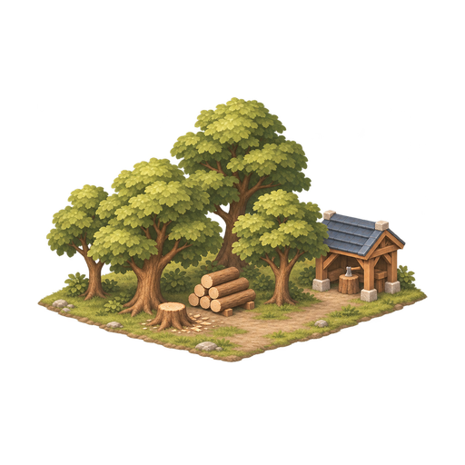
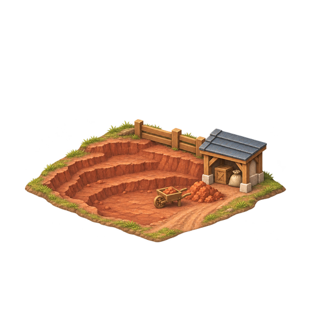
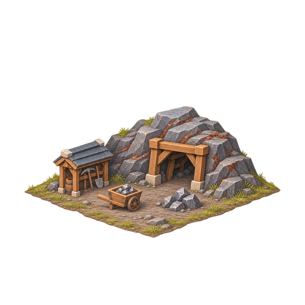
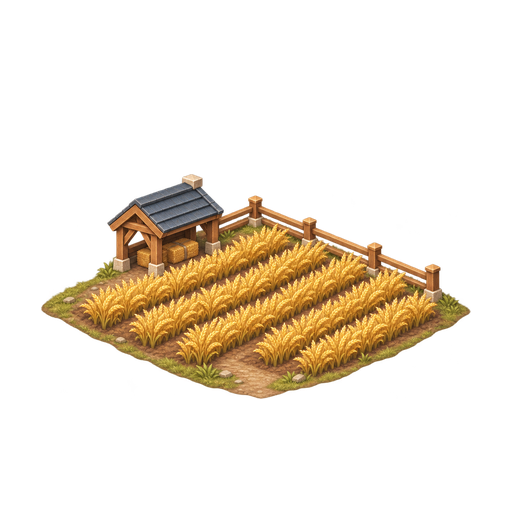
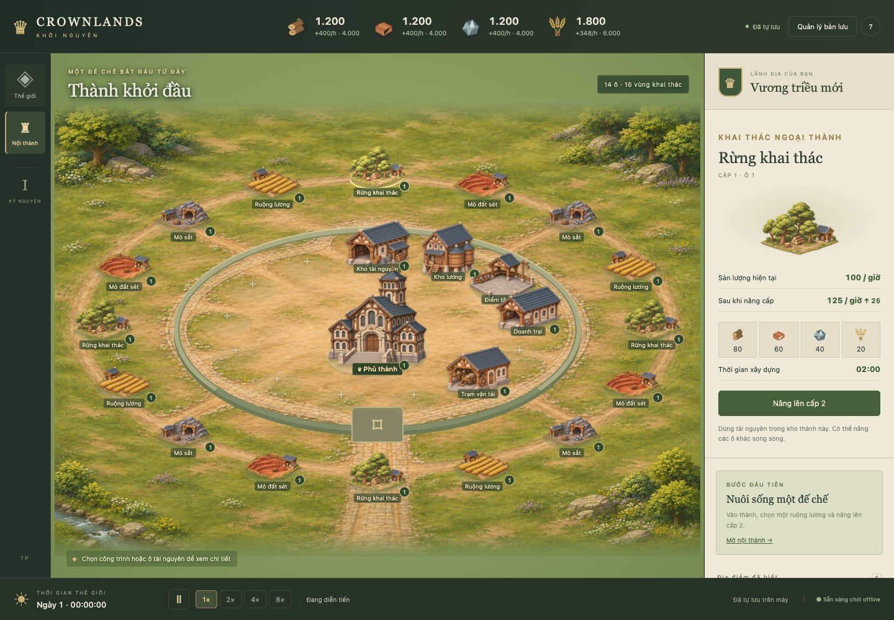

CROWNLANDS · CITY RESOURCES · 01
Bốn ô khai thác
Cùng góc nhìn và chất liệu với các nhà trong thành.
Bốn mẫu được ghép vào16 vị trí khai thác hiện có.







Ghép đủ16 ô quanh thành
Mỗi loại có4 vị trí. Bấm trực tiếp vào ảnh để xem thông tin và nâng cấp như trước.
